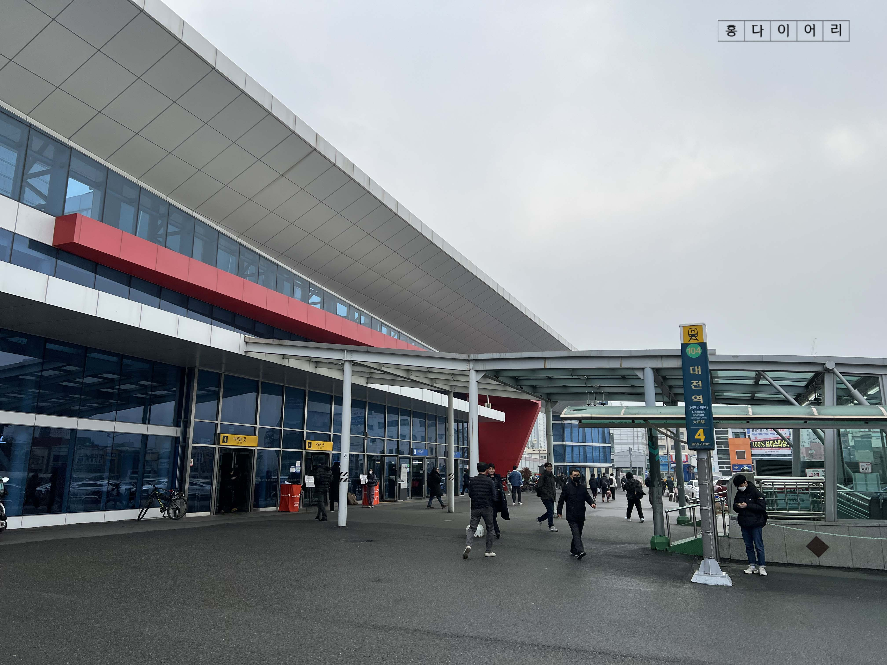
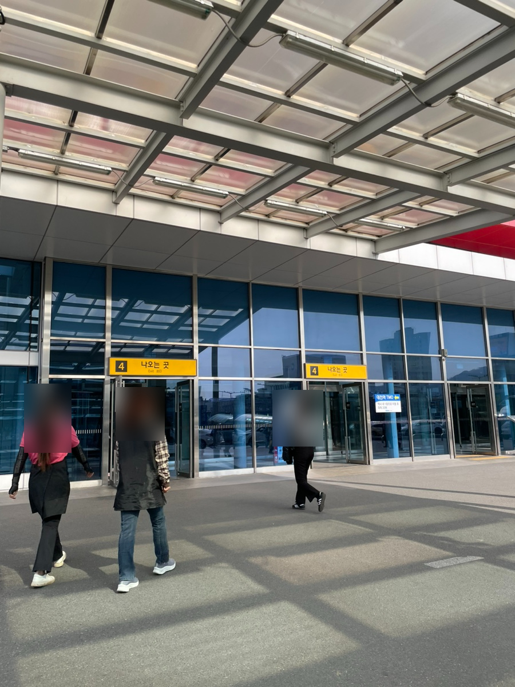
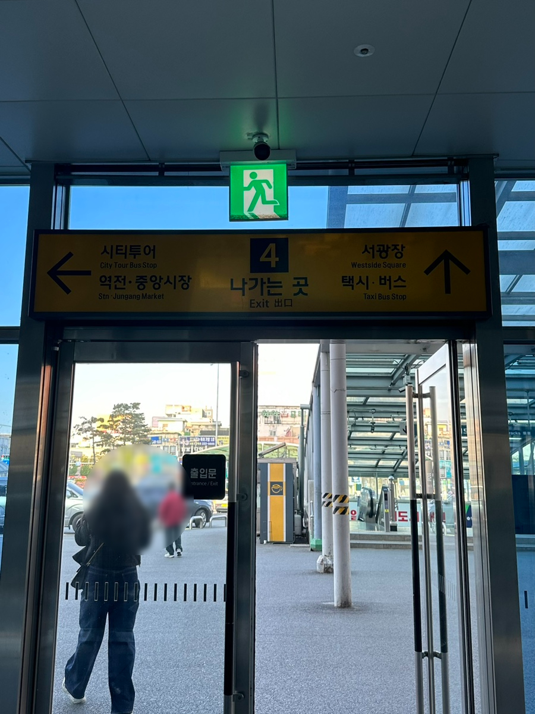
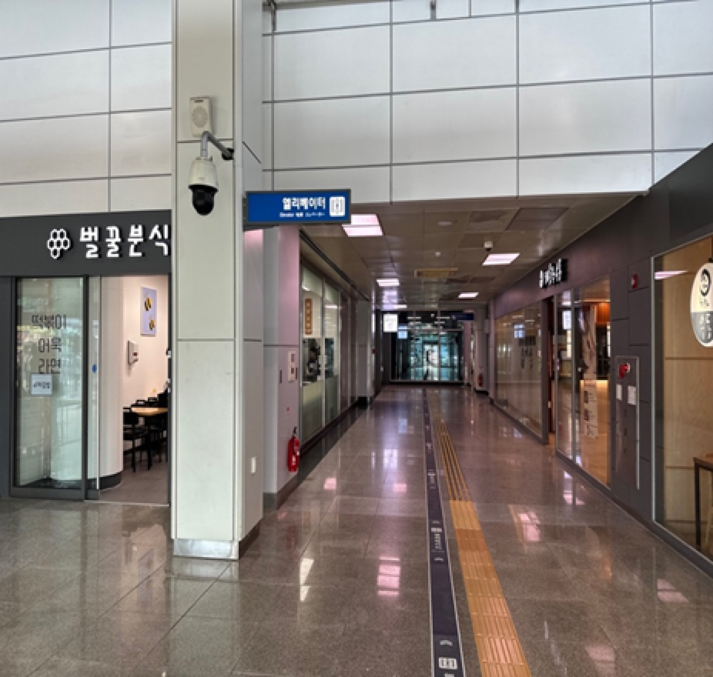
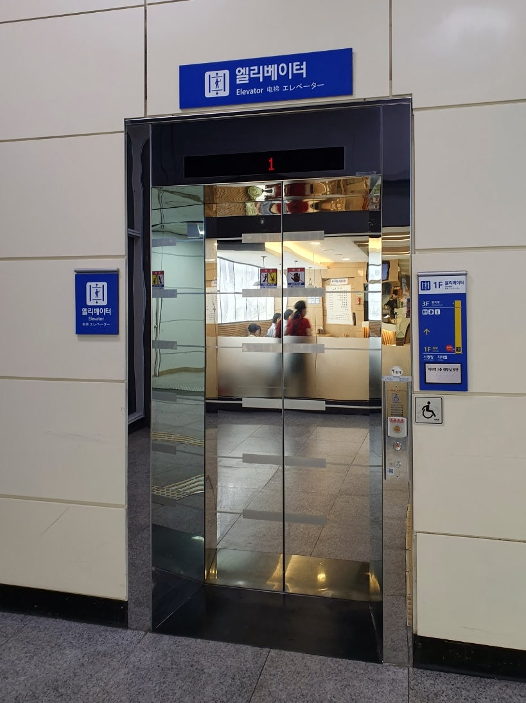
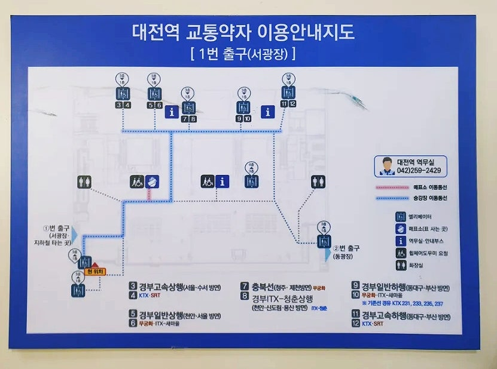

대전역 서광장
문·통로·승강기 비교
계단이 아닌 길을 알아볼 때 참고하세요. 서광장 출입문, 역 안의 승강기 방향 표지와 통로, 승강기 문 앞을 비교해 보세요.
철도역 문과 도시철도 계단을 먼저 구분해요
왼쪽 철도역 4번 문 · 오른쪽 도시철도 계단

같은 숫자 4가 붙어 있어도 왼쪽 철도역 문과 오른쪽 도시철도 계단은 다른 시설이에요. 건물의 노란 문 표지와 지붕 아래 계단을 구분하고 문 앞 바닥을 확대해요. 5번 계단형 출입부와 다른 문이며 실내 승강기까지 중간 길은 이 사진에 나오지 않아요.
4번 문 바깥 바닥을 먼저 비교해요
서광장 4번 문 · 바깥에서 본 모습

노란 4번 표지 → 열린 문 → 문 아래 바닥을 살펴봐요. 아래 안쪽 사진의 문과 표지를 비교할 수 있어요. 5번 계단형 출입부와 다른 문이며, 여기서 승강기까지의 연속 연결을 확인한 사진은 아니에요. 사람이 가린 문턱·실제 폭과 경사는 따로 확인해야 해요.
출입문과 실내 통로를 구분해요
서광장 4번 문 · 다른 출입부

표지의 서광장·택시·버스, 열린 문과 바깥 바닥을 비교해요. 문턱의 전체 모습은 사진 아래에서 잘려 있어요. 5번 계단형 출입부와 다른 문이며, 이 문에서 승강기까지의 연결은 더 확인해야 해요.
1층 실내 · 승강기 방향 표지

위쪽 엘리베이터 표지, 통로의 바닥과 점자블록을 살펴보세요. 게시 글은 두 식당 사이로 들어가 승강기를 찾는 방법을 설명합니다. 이 사진은 실내 구간을 보여 주며, 바깥 광장에서 들어가는 길을 확인한 사진은 아니에요.
승강기 문 앞과 안내지도를 살펴봐요
승강기 문 앞에서 볼 부분

문 위의 엘리베이터·1층 표시, 오른쪽 휠체어 버튼, 문 앞 바닥을 살펴보세요.
역 안의 길을 알아볼 자료

지도에 적힌 ‘1번 출구(서광장)’는 역 시설 번호예요. 모두의 50m의 버스 출발 06번·주차장 출발 03번은 사진을 살펴보는 순서이므로 두 숫자를 구분해 주세요.